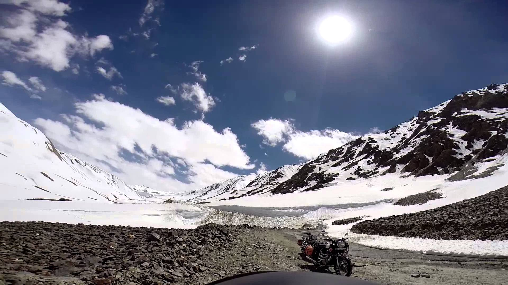
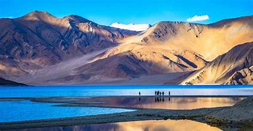
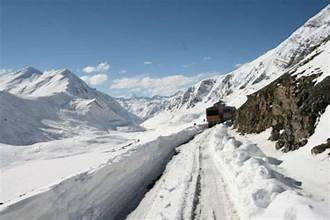
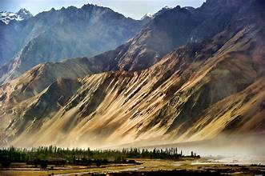

Ladakh
Ladakh (meaning "land of high mountain passes") is a mountainous region in North India. Leh, the main city is situated at 3500m above sea level nestled in the great Himalayan, Karakoram, Zanskar and Ladakh ranges. Ladakh is known for remote mountain beauty, studded with monasteries and stupas. Ladakh is often referred as "Little Tibet" due to its geographical proximity and strong links to Tibetan culture.
Places to Travel
Pangong Tso
The most popular tourist attraction in Ladakh, Pangong lake is an endorheic (landlocked) lake situated at 4350 meters. Also known as Pangong Tso it is 12 kilometres long and extends from India to Tibet. Almost 60% of Pangong Lake lies in the Tibetan Autonomous Region.
Khardung La
Khardung La, also known as Khardzong La, is a high mountain pass in Ladakh region of Jammu and Kashmir, near Leh. It serves as the gateway to Shyok and Nubra Valley. Khardung La is popular as the highest motorable road in India at an elevation of 5602 metres. However, contrary to the belief, its actual elevation is 5359 metres making Dungri La the highest motorable road pass in India.
Nubra Valley
Nubra Valley, nestled in the union territory of Ladakh, lies approximately 140 kilometers from Leh, along the ancient Silk Route. Characterized by the meandering Shyok and Nubra rivers, the valley boasts stunning landscapes with arid mountains serving as a dramatic backdrop and dotted with beautiful monasteries. Accessible via the world-famous Khardung La Pass, known as one of the highest motorable passes globally, the valley captivates visitors with surreal landscapes, featuring dramatic mountains,sweeping sand dunes, and lush green valleys, offering a visual feast for the senses.